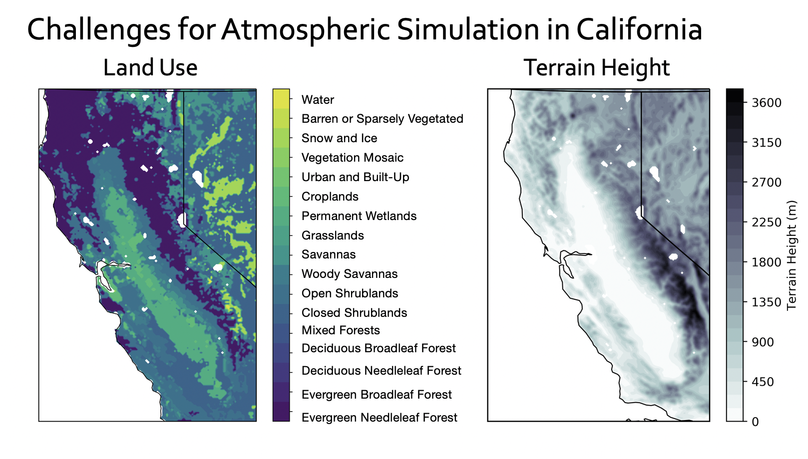
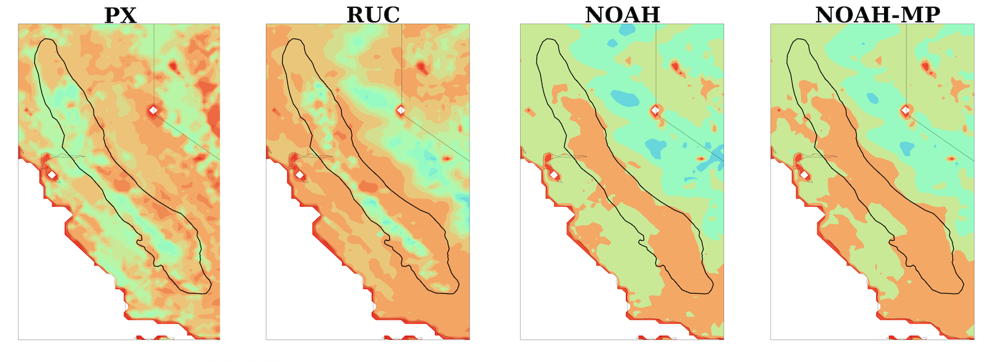

Master's Research
California’s Central Valley contains complex atmospheric dynamics within the United States, which present challenges to both effective weather and air quality forecasting and water resource and fire hazard management strategies. During the summertime, the atmospheric dynamics in the Central Valley do not occur because of large-scale weather systems. Instead, smaller-scale land-surface characteristics, such as varied land-use, irrigation, and localized winds from the surrounding mountain slopes, are the main drivers of atmospheric conditions.
Central in the simulation and understanding of the atmosphere in the summertime is soil moisture. Currently, atmospheric models vary in their ability to simulate soil moisture within the Central Valley. Some models create a complex patchwork of soil moisture, while others create dry conditions throughout the basin. While seemingly unremarkable, increased variation in the surface soil moisture causes a better representation of the overlying atmosphere, regardless of the complexity of chosen physics within the regional climate model. .
